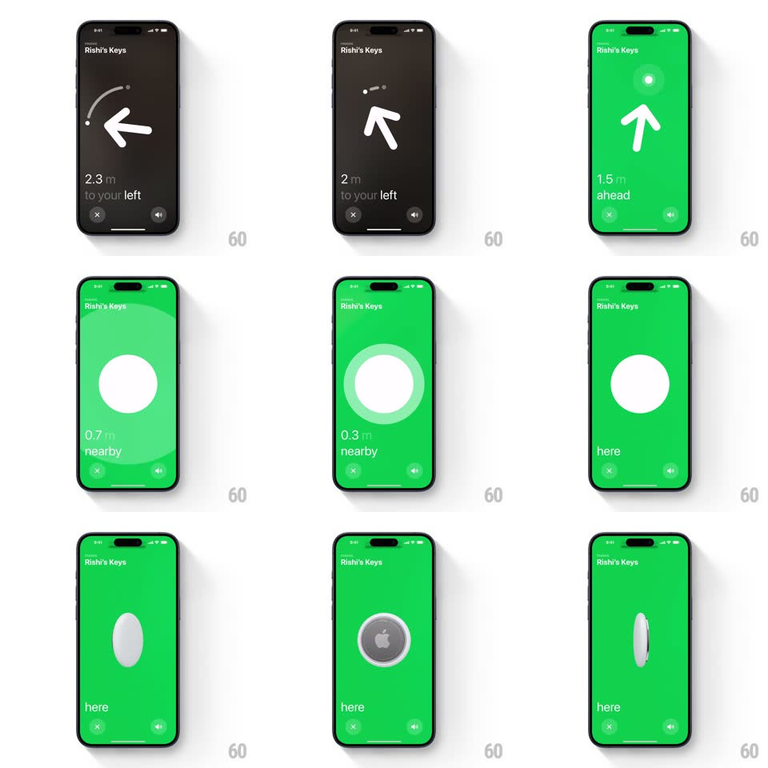

Media
Frame-by-frame

Rebuild this interaction 1:1: Find My's precision finding - a dark radar with a giant white arrow and dotted arc ("1.9 m to your left") rotates with the phone's gyro; the screen floods green as you close in ("ahead" -> "1.2 m nearby" white circle -> "0.5 m" pulsing ring), ending on "here" with a 3D AirTag spinning in the circle.

Rebuild this interaction 1:1: Find My's precision finding - a dark radar with a giant white arrow and dotted arc ("1.9 m to your left") rotates with the phone's gyro; the screen floods green as you close in ("ahead" -> "1.2 m nearby" white circle -> "0.5 m" pulsing ring), ending on "here" with a 3D AirTag spinning in the circle.
## Integration
Integration: stack-agnostic spec - springs given as stiffness/damping, timed motions as duration + curve; map every value to your framework and animation library of choice.
## Scene
"Rishi's Keys" top-left, X and speaker buttons bottom. Far state: near-black screen, huge white chevron arrow with a dotted arc above it, distance + direction text ("1.9 m / to your left"). Near state: bright green field with a white circle, then the AirTag rendering rotating inside it.
## Motion spec
Pattern: proximity state machine with gyro compass.
- Far: the arrow tracks the phone's heading live (rotation eases toward the sensor angle, spring ~200/24 - responsive but not jittery); the dotted arc trails above it; distance text updates smoothly.
- Crossing ~2m toward the target: the background floods green from the edges (400ms) and the arrow straightens to "ahead".
- Nearby (~1.2m): the arrow morphs into a white circle (arrow strokes retract while the circle draws, 300ms); at 0.5m a translucent ring pulses outward from the circle (scale 1 -> 1.5, fade, 1.2s loop).
- "here": the circle swaps to a photoreal 3D AirTag that spins on its vertical axis (one slow revolution, ~2s) with a haptic thump.
- Haptics intensify with proximity throughout (tick interval shortens as distance shrinks).
## Calibration
- Exactly three visual states (arrow / circle / AirTag) with distance-driven thresholds.
- The green is full-bleed and saturated - no halfway tints.
## Reduced motion
State changes crossfade; arrow rotation snaps to 15deg steps.
## Don't miss
- The dotted arc rotates WITH the arrow - it is a compass detail, not decoration.
- The AirTag shows its steel back and white face as it spins - a real 3D turn, not a flip.